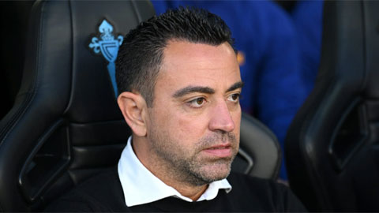

Xavi, tôi sẽ để Gudogan chơi vị trí hậu vệ
T3, 29/06/2023, 00:00 (GMT+7)
Tại sao Gundogan lại đặc biệt? Trước hết, vì anh là đội trưởng của Man City. Tìm ra được một người đội trưởng xứng đáng không bao giờ là điều dễ dàng. Chia tay một người đội trưởng như thế còn khó khăn hơn. Ở Man City, sau khi Vincent Kompany và Fernandinho ra đi, vị trí đội trưởng vốn là một khoảng trống. Không ai tỏ ra xứng đáng vượt trội. Sau cùng, tất cả thống nhất chọn Gundogan. Sau tất cả, đấy chính là bản hợp đồng đầu tiên mà HLV Pep Guardiola thực hiện trên cương vị HLV trưởng ở sân Etihad. Đó là một lựa chọn xác đáng, không hẳn vì độ thâm niên của Gundogan. Chỉ riêng chuyện vì sao tiền vệ người Đức là bản hợp đồng đầu tiên của Guardiola ở Man City đã nói lên nhiều điều. Trong những bước chân đầu tiên ở môi trường mới, Guardiola đã chọn Gundogan làm người đồng hành của mình, đơn giản vì ông tin rằng mình cần nhất một cầu thủ có thể đóng vai trò một cánh tay nối dài của HLV trưởng ở trên sân. Triết lý của Guardiola không hề dễ hiểu, không phải ai cũng có thể tiếp tục được ngay lập tức. Và ở đây, “học thầy không tày học bạn”.
Nếu phải kể ra ngôi sao sáng nhất của Man City qua các thời kỳ, Gundogan không bao giờ có cơ hội được góp mặt. Thực ra thì anh cũng không có nhu cầu góp mặt, và không bao giờ cảm thấy thoải mái khi phải đứng dưới ánh sáng chủ đạo trên sân khấu. Man City bây giờ là ví dụ. So về đội nổi tiếng, Gundogan làm sao bì được với Erling Haaland, Kevin de Bruyne, Jack Grealish hay Bernardo Silva. Anh thậm chí còn không được nhắc tới nhiều bằng thủ môn Ederson hay các hậu vệ như Akanji hay Ruben Dias.
Giới thiệu
Tin tức nổi bật